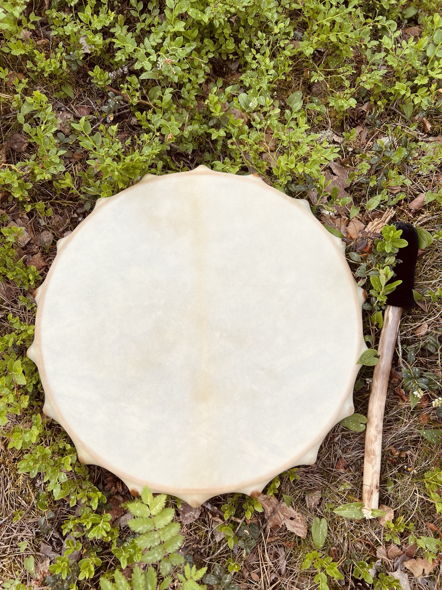
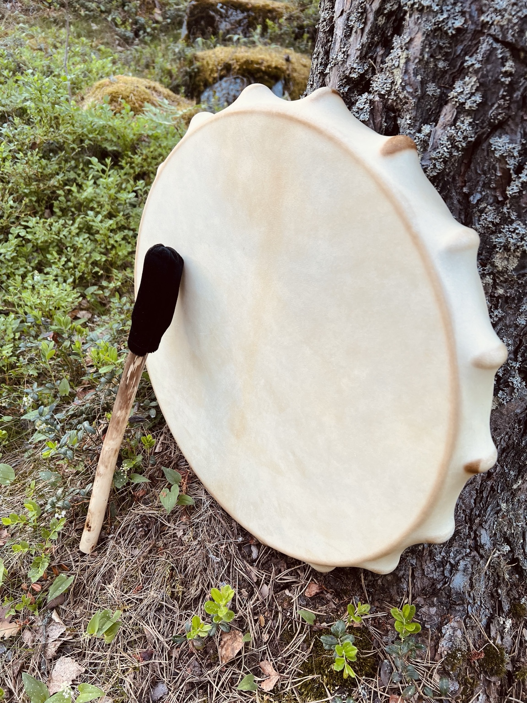
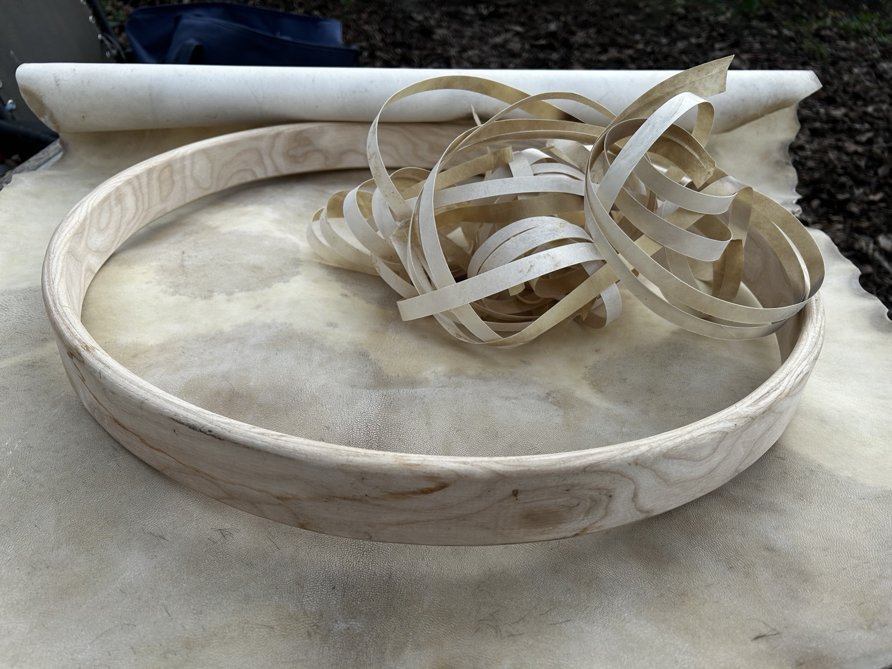
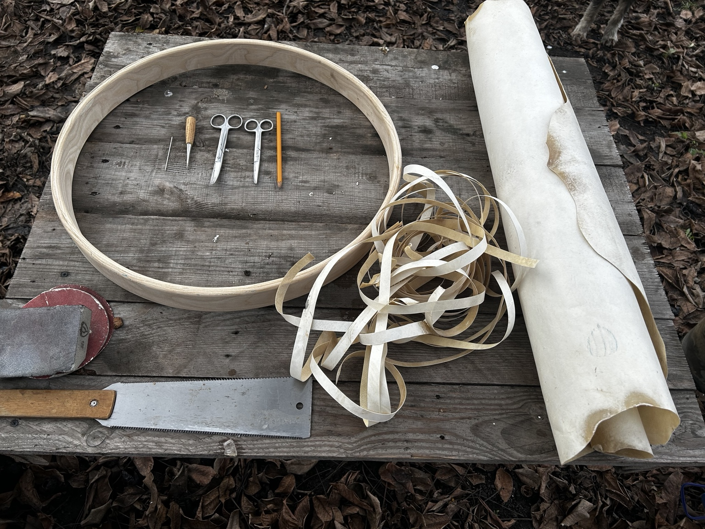
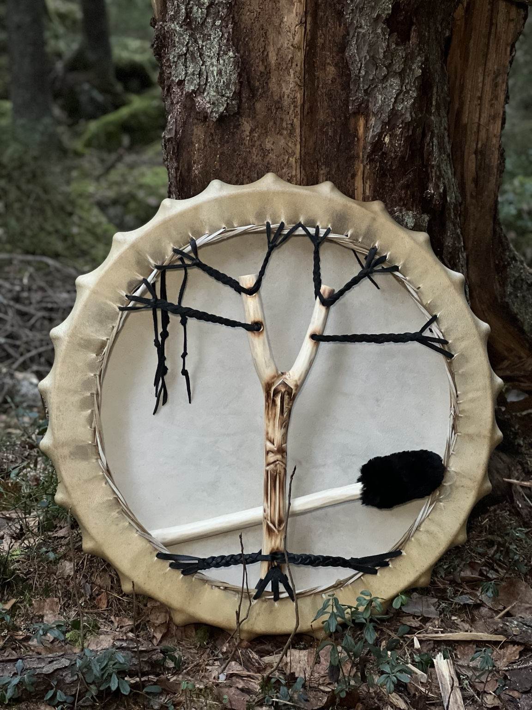
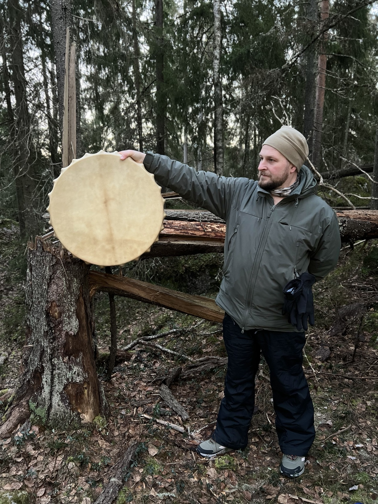
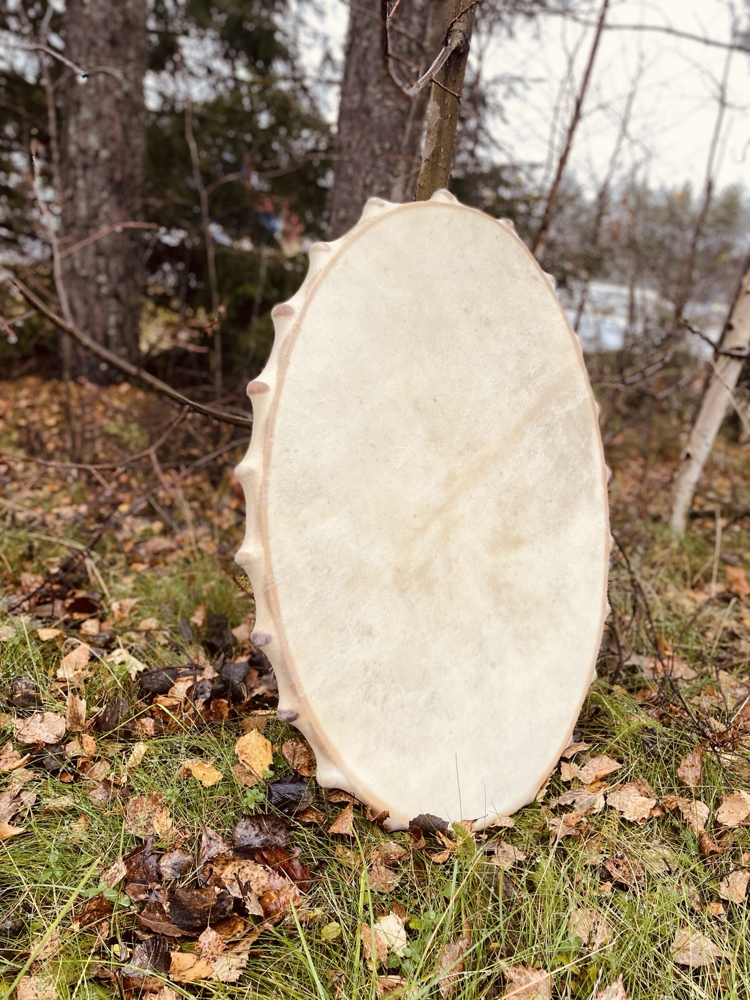
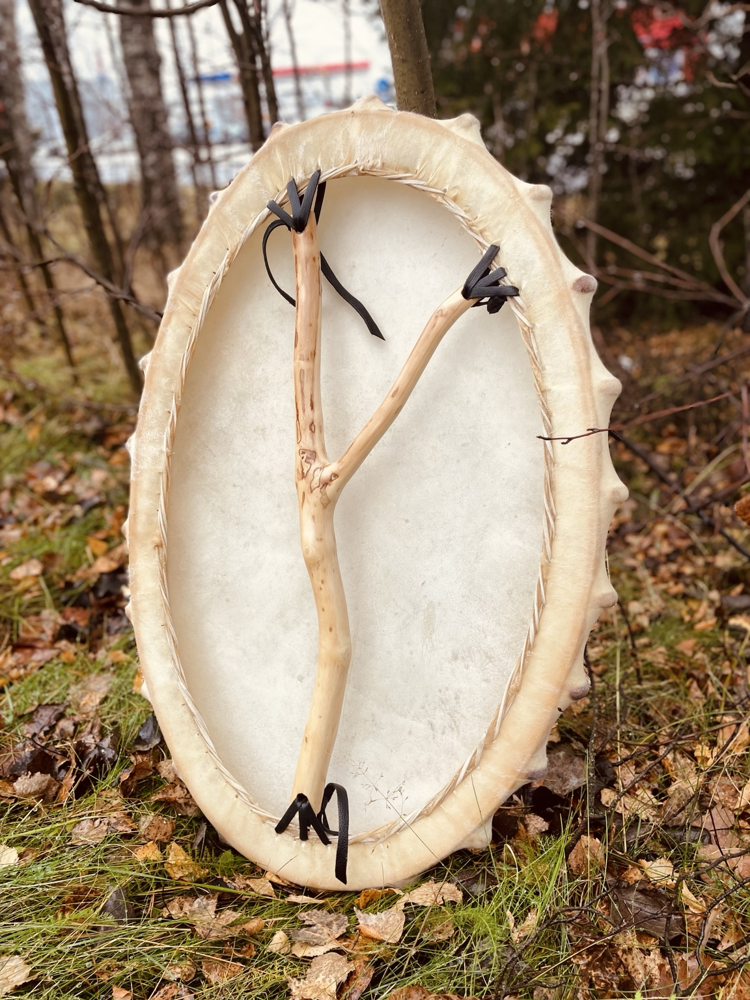
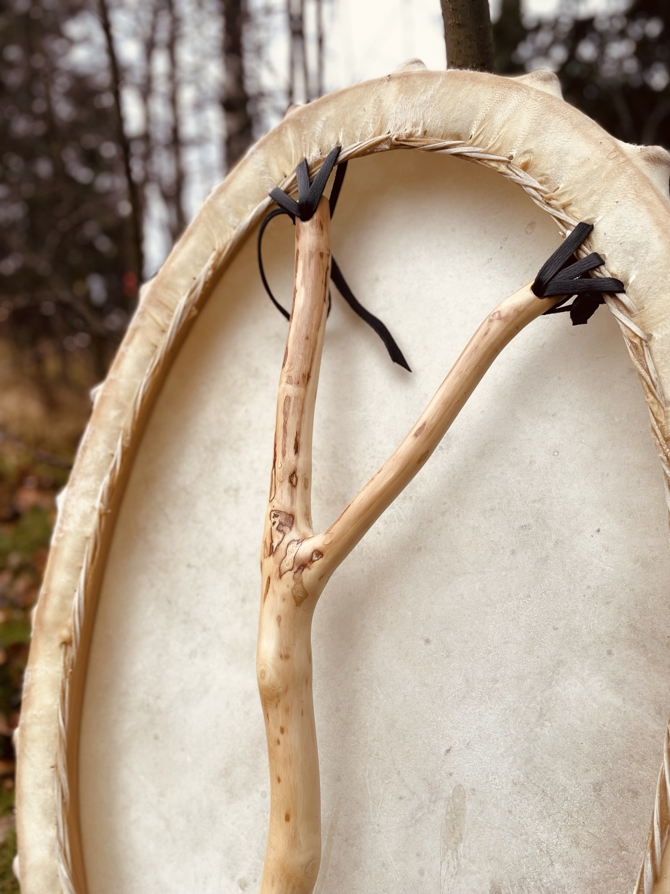

42 см
Бубен NOAIDI 42 см
42 см — 280 €
Матеріал: натуральна козяча шкіра та обід із ясена.
Запитати про 42 смРУЧНА РОБОТА · УКРАЇНА
NOAIDI створює шаманські бубни на замовлення з натуральної козячої шкіри, ободом з ясена та уважною ручною роботою. Кожен бубен має власний голос, форму і характер.
Доставка Новою Поштою

Це бубни ручної роботи для особистої практики, камерних подій і уважної роботи зі звуком. У текстах ми вживаємо також поширений запит “шаманський барабан”, але NOAIDI зберігає точне слово “бубен” для інструмента.
Виготовлення не схоже на потоковий каталог: діаметр, вага, тембр, хват і декоративні деталі узгоджуються перед початком роботи.

Обід гнеться з добірного ясеня, козяча шкіра натягується вручну, а кожен інструмент проходить повільний шлях від матеріалу до звучання. Саме тому бубен зі шкіри та бубен з ясена має живу, природну відповідь у руках.
42 см
42 см — 280 €
Матеріал: натуральна козяча шкіра та обід із ясена.
Запитати про 42 см52 см
52 см — 340 €
Матеріал: натуральна козяча шкіра та обід із ясена.
Запитати про 52 см62 см
62 см — 360 €
Матеріал: натуральна козяча шкіра та обід із ясена.
Запитати про 62 см



Нижче — реальні фото інструмента NOAIDI: вигляд спереду, зворотний бік і деталь ручки. Важливий візуальний контент продубльований на сторінці, а Instagram лишається додатковим каналом зв'язку.



Я виготовляю бубни понад 13 років. Почав робити шаманські бубни, тому що мене не влаштовували ті, що були у продажу. Я обрав якість, простоту і традицію.
Напишіть, щоб уточнити діаметр, термін виготовлення, авторський розпис, спеціальні побажання і доставку Новою Поштою.
Доставка по Україні виконується Новою Поштою після узгодження міста, відділення та пакування. Базові ціни круглих бубнів: 42 см — 280 €, 52 см — 340 €, 62 см — 360 €. Авторський розпис, нестандартна комплектація та спеціальні побажання розраховуються окремо перед початком роботи.
Круглі бубни NOAIDI 42, 52 і 62 см виготовляються з натуральної козячої шкіри, обода з ясена, сиром'ятного шнурування, дерева та м'якої повсті для колотушки.
Для круглих моделей 42, 52 і 62 см використовую натуральну козячу шкіру. Порода, вік і стать тварини впливають на характер мембрани й звук.
Для круглих моделей 42, 52 і 62 см використовую ясен. Це міцний, пружний і музичний матеріал, який добре тримає форму та звучання бубна.
Доступні круглі бубни: 42 см чистого розміру (46 см з резонаторами) — добре підходить для підвищеної вологості та сауни; 52 см чистого розміру (56 см з резонаторами); 62 см чистого розміру (67 см з резонаторами). Також доступна овальна форма: 74 x 47 см з резонаторами.
Орієнтовний термін виготовлення — 6-8 тижнів після погодження деталей.
Так, авторський розпис можна обговорити окремо. Малюнок має відповідати формі інструмента і не змінювати його фізичну конструкцію.
Готовий бубен пакується для безпечного транспортування і відправляється Новою Поштою.
Креми та мазі на основі воску добре підходять для догляду за мембраною: віск заповнює пори, і з часом вологість менше впливає на натяг шкіри та звук. Також не залишайте інструмент біля батареї, у вологому приміщенні або в машині на сонці. Натуральна шкіра реагує на температуру й вологість, тому їй потрібні стабільні умови.